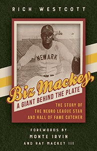

<HTML><head><script> (function(i,s,o,g,r,a,m){i['GoogleAnalyticsObject']=r;i[r]=i[r]||function(){  (i[r].q=i[r].q||[]).push(arguments)},i[r].l=1*new Date();a=s.createElement(o),  m=s.getElementsByTagName(o)[0];a.async=1;a.src=g;m.parentNode.insertBefore(a,m)   })(window,document,'script','//www.google-analytics.com/analytics.js','ga');   ga('create', 'UA-43183130-1', 'temple.edu');   ga('send', 'pageview'); </script><title>Rich Westcott: Biz Mackey, a Giant behind the Plate - Print</TITLE><link rel="stylesheet" href="../general.css" type="text/css"><SCRIPT LANGUAGE = JAVASCRIPT></SCRIPT></HEAD><BODY LINK="#3152A5" VLINK="#3152A5" ALINK=Gray BGCOLOR=White><CENTER><P CLASS=intro><br>The first biography of arguably the greatest catcher in the Negro Leagues<br><br></P></CENTER><br>&nbsp;<!--none//--><Table width="100%" border=0 cellspacing=5><tr><td width="175" align="center"></td><td>
	<h1 class = "booktitle">Biz Mackey, a Giant behind the Plate</h1> 
	<h1 class = "subtitle">The Story of the Negro League Star and Hall of Fame Catcher</h1>
	<h3 class="author">Rich Westcott <br>
		Forewords by Monte Irvin and Ray Mackey III</h3>
	<p class="info"><p class="info">cloth EAN:  978-1-4399-1551-6 (ISBN:1-4399-1551-2)</br>$27.50, Feb 18, <font color=#990033>Available</font><br><br>
	<p class="info">Electronic Book EAN: 978-1-4399-1553-0 (ISBN:1-4399-1553-9)</br>$27.50, Feb 18, <font color=#990033>Available</font><br>
	<p class="info"><p class="info">208 pp, 5.375 x  8.5, 3&nbsp;figures 1 tables, 3 figs., 20 halftones</p></td></tr></table></P></td></tr></table><BR>
	
	<BLOCKQUOTE>
		<p><i>"Before the time of Josh Gibson and Roy Campanella, James Raleigh 'Biz' Mackey was the quintessential catcher in the Negro Leagues. Cumberland Posey, who had managed the great Gibson, rated Mackey as his number-one catcher of all time. As a young talent with the Baltimore Elite Giants, Campanella credited Mackey with his own development into a Major League catcher. This previously untold story of an unheralded player is finally brought to light in Westcott's </i>Biz Mackey, a Giant behind the Plate."<br>&#8212;<b>Larry Lester</b>, co-founder of the Negro Leagues Baseball Museum and author of <i>Black Baseball in New York City: An Illustrated History, 1885&#8211;1959</i><br></BLOCKQUOTE>
	
	<P><p><i>"The best all-around catcher in black baseball history"</i>&#8212;<b>Cumberland Posey</b>, Owner of the Homestead Grays<br/><br/>National Baseball Hall of Fame catcher James Raleigh "Biz" Mackey's professional career spanned nearly three decades in the Negro Leagues and elsewhere. He distinguished himself as a defensive catcher who also had an impressive batting average and later worked as a manager of the Newark Eagles and the Baltimore Elite Giants.<br/><br/>Using archival materials and interviews with former Negro League players, baseball historian Rich Westcott chronicles the catcher's life and remarkable career in <i>Biz Mackey </i>as well as providing an in-depth look at Philadelphia Negro League history. Westcott traces Mackey's childhood in Texas as the son of sharecroppers to his success on the baseball diamond where he displayed extraordinary defensive skills and an exceptional ability to hit and to handle pitchers. Mackey spent one third of his career playing in Philadelphia, winning championships with the Hilldale Daisies and the Philadelphia Stars. Mackey also mentored famed catcher Roy Campanella and had an unlikely role in the story of baseball's development in Japan.<br/><br/>A celebrated ballplayer before African Americans were permitted to join Major League Baseball, Biz Mackey ranks as one of the top catchers ever to play the game. With <i>Biz Mackey, </i>he finally gets the biography he deserves.<br>
		
		<P CLASS="top"><A HREF="#top">BACK TO TOP</A></P></p>
		
		<P><h2  class="inpageheading"><A NAME="excerpt"></a>Excerpt</h2>
			<p><A HREF="http://www.temple.edu/tempress/chapters_2400/2476_ch1.pdf">Read Chapter 1 (pdf).</A><br>
				
		<P CLASS="top"><A HREF="#top">BACK TO TOP</A></P></P><P></b></p>
	
	<P><h2  class="inpageheading"><A NAME="reviews"></a>Reviews</h2>
		 
		 <p><i>"The baseball life of James Raleigh 'Biz' Mackey takes readers to places they wouldn't expect to go, as Mackey's long career moved him to many baseball places. He was mentored by the great catcher Louis Santop and was mentor to the great Roy Campanella. Even Negro baseball in Japan is part of the Mackey story. Westcott's very effective presentation of Mackey as 'a giant behind the plate' brings the reader into the tale of the important Hilldale Daisies Negro League team and introduces Mackey's Japanese baseball story. This book is a good read about an overlooked giant of American baseball."</i><br>&#8212;<b>Lawrence Hogan</b>, Professor Emeritus of History, Union County College, and author of <i>The Forgotten History of African American Baseball</i><br>
		 
		 <p><i>"Born at the tail end of the 19th century in rural Texas, Biz Mackey resisted the limits that segregation and sharecropping imposed on African Americans and found his calling in the Negro Leagues. His peripatetic career took him across the United States, into the Caribbean, and as far away as Japan. Early in the 21st century, decades after his death, he was inducted into baseball's Hall of Fame. As Rich Westcott demonstrates in</i> Biz Mackey, a Giant behind the Plate <i>, this was a long-overdue honor bestowed on one of baseball's finest catchers."</i><br>&#8212;<b>Rob Ruck</b>, Professor of Sport History, University of Pittsburgh, and author of <i>Raceball: How the Major Leagues Colonized the Black and Latin Game</i><br>
			 
	
	<P CLASS="top"><A HREF="#top">BACK TO TOP</A></P></b></p>
	
	<p><h2 class="inpageheading"><A NAME="contents"></a>
	Contents</h2><P><span style="font-family: 'Verdana';font-size: 13px;" >
	Foreword by Monte Irvin<br/>
	Foreword by Ray C. Mackey III<br/>
	Acknowledgments<br/><br/>
	Introduction<br/>
	1. One of Baseball&rsquo;s Greatest Catchers<br/>
	2. From the Farm to the Diamond<br/>
	3. Black Baseball in Philadelphia<br/>
	4. Blossoming with the Daisies<br/>
	5. Helping the Stars to Sparkle<br/>
	6. Elevating Baseball in Japan<br/>
	7. Moving Up to the Job of Manager<br/>
	8. Teaching Campy the Tricks of the Trade<br/>
	9. A Long-Overdue Induction into the Hall of Fame<br/><br/>
	Appendix: Biz Mackey&rsquo;s Year-by-Year Negro League Statistics<br/>
	Sources<br/>
	Index</span></P>
	
	<P CLASS="top"><A HREF="#top">BACK TO TOP</A></P></p>

<P><H2  class="inpageheading"><A NAME="author bio"></a>About the Author(s)</H2>
	<p>A leading authority on Philadelphia baseball, <b> Rich Westcott</b> is the author of 25 previous books. A newspaper and magazine writer, an editor for more than 40 years, and a former president of the Philadelphia Sports Writers Association, he has written for numerous national publications. He was the founding publisher of the newspaper <i>Phillies Report</i>, which covered the team for fourteen years, and has appeared in 10 documentaries about baseball history. He is an inductee into four halls of fame.<br>
		
		<P CLASS="top"><A HREF="#top">BACK TO TOP</A></P></P></P>

<P><h2 class="inpageheading"><a name="subjects"></a>Subject Categories</h2> 
	<p><a href="http://www.temple.edu/tempress/sports.html" target="_top">Sports</a> <br>
		<a href="http://www.temple.edu/tempress/philly.html" target="_top">Philadelphia Region</a> <br>
		<a href="http://www.temple.edu/tempress/biography.html" target="_top">Biography/Memoir/Autobiography</a> <br>
		<a href="" target="_top"></a> <br><a href="" target="_top"></a> </p></P><P></P>

<P CLASS="top"><A HREF="#top">BACK TO TOP</A></P></td><td width=2%>&nbsp;</td><td width=5>&nbsp;</td></tr></table><BR><font face="Arial" size="1"><a href="copyright.html" OnMouseOver="window.status='Web Copyright Policy';return true;" OnMouseOut="window.status=''" TITLE="Web Copyright Policy">&copy;</a> 2018 <a href="http://www.temple.edu" target="new" OnMouseOver="window.status='Link to Temple University home page';return true;" OnMouseOut="window.status=''" TITLE="Link to Temple University home page">Temple University</a>. All Rights Reserved. This page: http://www.temple.edu/tempress/titles/2476_reg.html</font></BODY></HTML>                    
